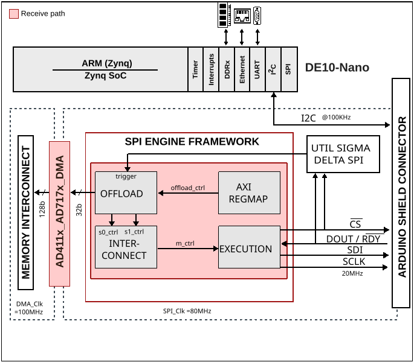

AD411x-AD717x HDL project
The AD4111 /AD4112 /AD4114 /AD4115/ AD4116 is a low power, low noise, 24-bit, sigma-delta (Σ-Δ) analog-to-digital converter (ADC), high impedance (≥1 MΩ) bipolar, ±10 V voltage inputs, and 0 mA to 20 mA current inputs. The AD4111 /AD4112 /AD4114 /AD4115 / AD4116 also integrates key analog and digital signal conditioning blocks to configure eight individual setups for each analog input channel in use.
The AD4111 /AD4112 /AD4114 features a maximum output data rate of 31.25 kSPS, AD4115 features a maximum output data rate of 125 kSPS and AD4116 features a maximum output data rate of 62.5 kSPS.
The AD7172-2 /AD7172-4 /AD7173-8 /AD7175-2/ AD7175-8 /AD7176-2 /AD7177-2 is a low noise, low power, multiplexed, Σ-Δ analog-to-digital converter (ADC) for low bandwidth input signals. The AD7172-2 /AD7172-4 /AD7173-8 /AD7175-2 / AD7175-8 /AD7176-2 /AD7177-2 integrates key analog and digital signal conditioning blocks to allow users to configure an individual setup for each analog input channel in use.
The AD7172-2 /AD7172-4 /AD7173-8 features a maximum output data rate of 31.25 kSPS, AD7175-2/ AD7175-8 /AD7176-2 features a maximum output data rate of 250 kSPS and AD7177-2 features a maximum output data rate of 10 kSPS.
The digital filter allows flexible settings, including simultaneous 50 Hz and 60 Hz rejection at a 27.27 SPS output data rate. The user can select different filter settings depending on the requirements of each channel in the application.
This project has a SPI Engine instance to control and acquire data from the AD411x/AD717x precision ADC. This instance provides support for capturing continuous samples at the maximum sample rate.
Supported boards
Supported devices
Supported carriers
DE10-Nano Arduino shield connector
Block design
Block diagram
The data path and clock domains are depicted in the below diagram:
{kind=link}

CPU/Memory interconnects addresses
The addresses are dependent on the architecture of the FPGA, having an offset added to the base address from HDL (see more at CPU/Memory interconnects addresses).
Instance |
DE10-Nano |
|---|---|
axi_dmac_0 |
0x0002_0000 |
axi_spi_engine_0 |
0x0003_0000 |
trigger_generator |
0x0004_0000 |
I2C connections
I2C type |
I2C manager instance |
Alias |
Address |
I2C subordinate |
|---|---|---|---|---|
PS** |
i2c1 |
sys_hps_i2c1 |
— |
— |
SPI connections
SPI type |
SPI manager instance |
SPI subordinate |
CS |
|---|---|---|---|
PL |
axi_spi_engine |
ad411x_ad717x |
0 |
GPIOs
The Software GPIO number is calculated as follows:
DE10-Nano: the offset is 32
GPIO signal |
Direction |
HDL GPIO EMIO |
Software GPIO |
|---|---|---|---|
(from FPGA view) |
DE10-Nano |
||
spi_miso |
INPUT |
34 |
2 |
error |
INPUT |
33 |
1 |
sync_error |
INPUT |
32 |
0 |
Interrupts
Below are the Programmable Logic interrupts used in this project.
Instance name |
HDL |
Linux DE10-Nano |
Actual DE10-Nano |
|---|---|---|---|
axi_spi_engine_0 |
5 |
45 |
77 |
axi_dmac_0 |
4 |
44 |
76 |
Building the HDL project
The design is built upon ADI’s generic HDL reference design framework. ADI distributes the bit/elf files of these projects as part of the ADI Kuiper Linux. If you want to build the sources, ADI makes them available on the HDL repository. To get the source you must clone the HDL repository, and then build the project as follows:
Linux/Cygwin/WSL
~$
cd hdl/projects/ad411x_ad717x/de10nano
~/hdl/projects/ad411x_ad717x/de10nano$
make
A more comprehensive build guide can be found in the Build an HDL project user guide.
Resources
More information
Support
Analog Devices, Inc. will provide limited online support for anyone using the reference design with ADI components via the EngineerZone FPGA reference designs forum.
For questions regarding the ADI Linux device drivers, device trees, etc. from our Linux GitHub repository, the team will offer support on the EngineerZone Linux software drivers forum.
For questions concerning the ADI No-OS drivers, from our No-OS GitHub repository, the team will offer support on the EngineerZone microcontroller No-OS drivers forum.
It should be noted, that the older the tools’ versions and release branches are, the lower the chances to receive support from ADI engineers.